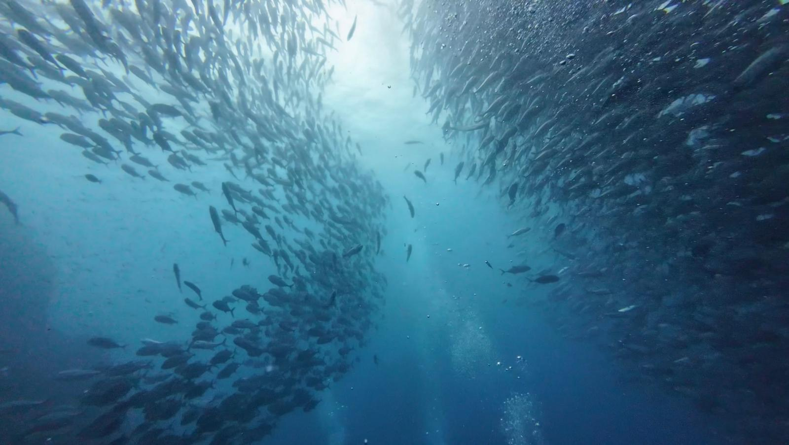
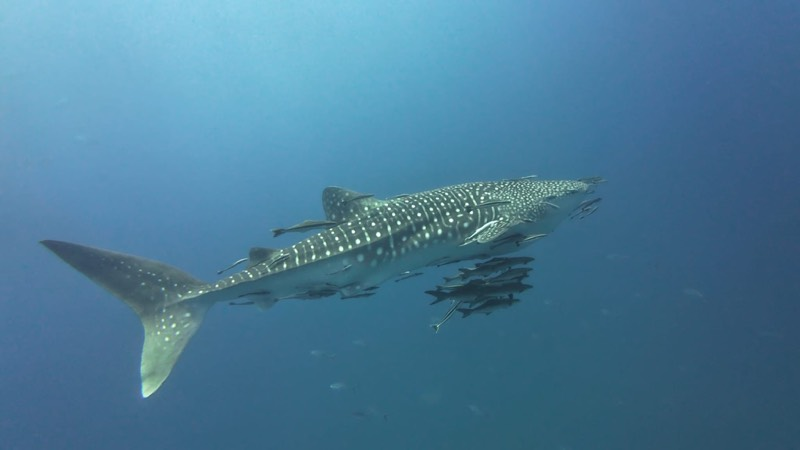
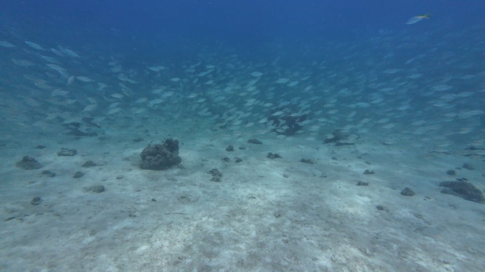

Accueil / Galerie photos
Photos de plongée
à Koh Phangan
Voici à quoi ressemble vraiment la plongée à Koh Phangan : tortues, requins-baleines et sourires sous l'eau. Toutes les photos de cette page ont été prises lors de nos propres sorties depuis Chaloklum.
Sail Rock et les requins-baleines
Le grand bleu



Koh Ma et Little Sail Rock
La petite faune



Le bateau et ceux qui sont à bord
Hors de l'eau


Envie de vos propres
photos comme celles-ci ?
Chaque sortie comprend une vidéo sous-marine de votre plongée, envoyée ensuite. Apportez votre appareil photo si vous en avez un : nous vous montrerons les plus beaux spots.